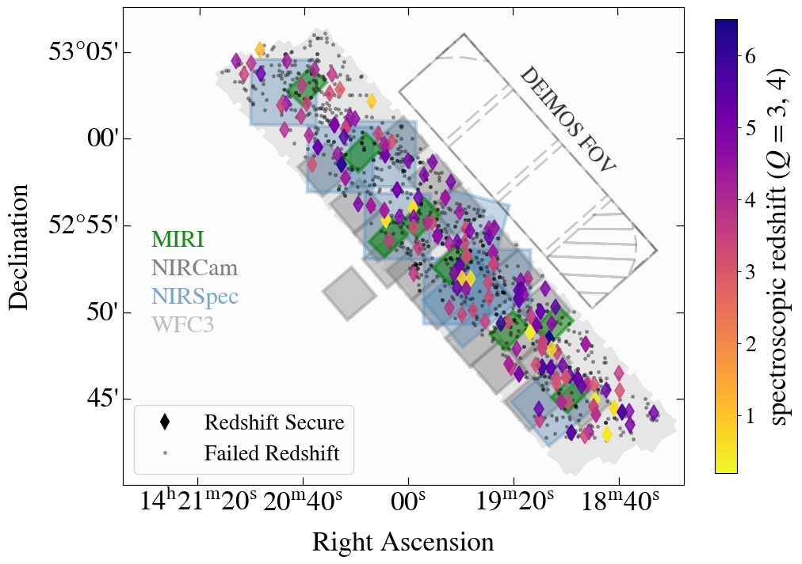

We are approaching a new era in the field of high-redshift galaxies with the launch of the James Webb Space Telescope (JWST). Thus, it is critical to provide a robust sample of potential targets, as well as understand galaxies in the epochs near reionization to bridge the gap between current and future observations. We present the results from 2 spectroscopic surveys to analyze Lyman-α emitters at the epoch at the end of reionization (z~4-6).
Mapping Bubbles in the EoR
with Caitlin Casey, Ting-Yi Lu, Koki Kakiichi, Romain Meyer, and Katie Kudla

We propose a two-night MOSFIRE follow-up to detect Lyman-alpha (Lyα) from strong z=7–8 [OIII] emitters in FRESCO and COSMOS-3D. The science goal is to map ionized bubbles at the mid-point of reionization, since their sizes and topologies reflect the ionizing properties of early galaxies, which are difficult to constrain directly. The visibility of galaxy Lyα emission is highly sensitive to the surrounding neutral IGM and can thus trace the spatial distribution of ionized regions around galaxies, or the "ionized bubble topology." Recent JWST high-z galaxy surveys such as FRESCO and COSMOS-Web have uncovered hundreds of z>6 galaxies across wide survey areas, allowing us to explore the infant Universe. With Keck's wide field of view, we can efficiently target bright z=7–8 galaxies in JWST and search for Lyα emission. We will use the (non)detection of Lyα to find and map large ionized regions and infer properties of ionizing sources.
WERLS Survey
with Caitlin M. Casey, Jeyhan Kartaltepe, Olivia Cooper, Arianna Long, Mike Cooper, and others
This is an extensive survey of high-redshift (6 < z < 8) Lyman-alpha emitters in the EGS, COSMOS, and UDS. The massive
observational effort was awarded 29 nights using Keck/LRIS and Keck/MOSFIRE, and was completed by January 2024. I conducted
Keck/LRIS obsrevations, data reduction, and analysis, to be descirbed in Urbano Stawinski et al. in prepartion.
The observations will greatly increase the number of known Lyman-alpha emitters in fields targeted by major JWST
programs. Our data will aid in target selection as well as understanding galaxies at the end of reionization.
Deeper than Deep Survey
with M. C. Cooper, Steven L. Finkelstein, Intae Jung, Pablo G. Pérez-González, Caitlin M. Casey, Olivia R. Cooper, Nimish P. Hathi, Benne W. Holwerda, Anton M. Koekemoer, Vital Fernández, Rebecca L. Larson, Ray A. Lucas, L. Y. Aaron Yung

We introduce an extensive survey of z > 3 Lyman-α emitters in the EGS field. Using HST photometry, we select 947 potential
Lyman-α emitters with zphot > 3 for spectroscopic follow up with Keck/DEIMOS. We confirm 126 Lyman-α emitters
at 2.8 < z < 6.5, including 4 with z > 6. Our observations will help constrain the Lyman-α fraction from 4 < z < 6 in an independent
field from previous studies. In addition, this survey will greatly assist target selection for The Cosmic Evolution Early Release Science
Survey (CEERS), which studied >400 galaxies in the EGS field within the first 5 months of JWST science observations.
The survey website, where you can download the entire catalog, can be found here:
https://sstawins.github.io/deeper_than_deep/index.html